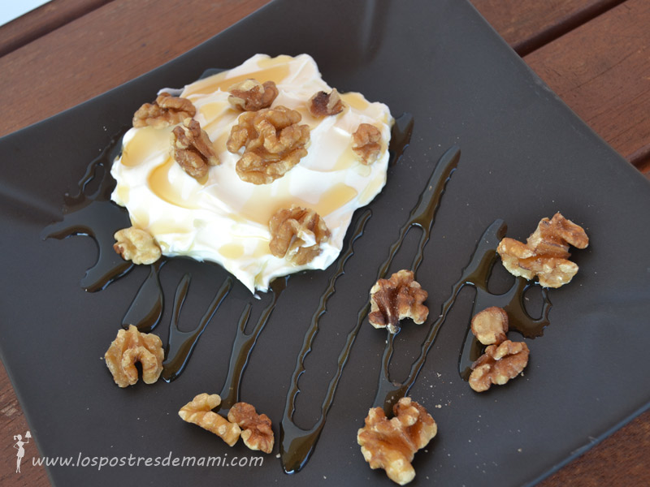
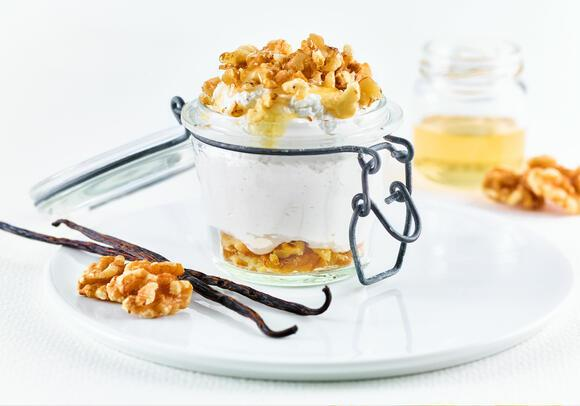

Como preparar un plato de Yogur griego con miel y nueces:

Indice:
- Ingredientes.
- Paso a paso.
- Resultado Final.
Ingredientes:
- 1 yogur natural
- 800 ml de leche entera
- 200 ml de nata líquida
Paso a paso:
Preparación del yogur:
- Mezclamos en un bol la leche, la nata y el yogur natural. Lo repartimos entre los vasos de yogur y lo metemos en la yogurtera toda la noche. A mí me gusta dejarlo unas 12 horas.
- Pasado ese tiempo ya tenemos hecho los yogures. Los dejamos enfriar.
- Ahora necesitamos un bol, dentro del bol un embudo grande y un filtro de café (también se puede usar una tela limpia, pero creo que con el colador de café es más práctico porque es desechable).
- Colocamos todos los yogures en el filtro de cafe, y lo dejamos unas 4 horas en la nevera. El suero lácteo irá cayendo por el embudo poco a poco al fondo del bol y nos irá quedando un exquisito yogur griego.
- Cuanto más tiempo lo dejemos, más consistente quedará el yogur. Yo lo he dejado cuatro horas, pero vosotros mismos veréis.
- Ahora sólo queda decorarlo… Yo he optado por la miel y las nueces, para mí una combinación deliciosa!
¡El Yogur griego con miel y nueces ya esta listo!
Resultado Final:
